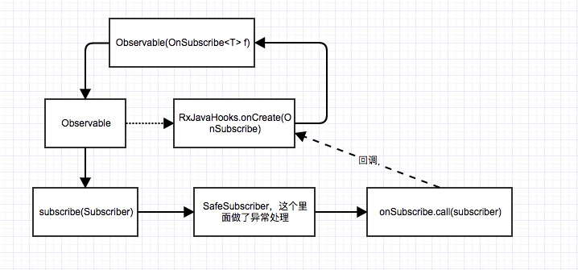
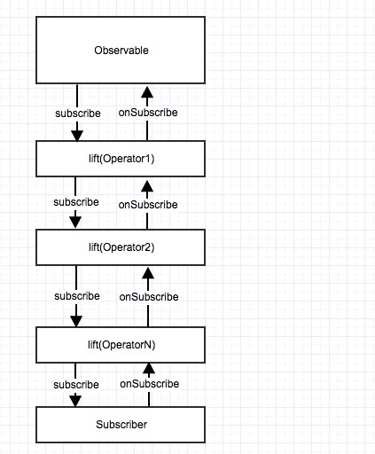

RxJava使用观察者模式，基于事件驱动。主要包含两部分Observable和Observaber。而Rxjava最大的特色在于其灵活强大的操作符(Operators)和调度器(Scheduler)
Operators
Creating Observables
create(OnSubscribe)
示例
- 这种情况下会打印
subscriber。 - 这个时候加上
- 那么会打印
- 源码分析:
- 通过
RxJavaHooks创建OnSubscribe
RxJavaHooks会在首次使用的时候初始化。
之后还需要订阅
判断订阅者是否为空,之后直接交给
RxJavaHooks执行onObservableStart，这里的参数observable.onSubscribe正是Create传入的，而在RxJavaHooks中onObservableStart调用了RxJavaPlugin中的onSubscribeStart。这个方法直接返回原来的OnSubscribe也就是Create传入的。这个时候会回调call。create()有另外两种参数专门用于处理backPressure(反向压力，生产者生产速度远大于消费者消费速度)。
SyncOnSubscribe里面需要关注的是SubscriptionProducer，而AsyncOnSubscribe需要关注AsyncOuterManager。这两个东西之后再讨论(TODO)
defer
直到观察者订阅之后才创建可观察对象，示例
- 源码分析
- 1.2.4采用
OnSubscribeDefer,2.0.3采用ObservableDefer。
Empty Never Throw
Empty
- 源码分析
- 直接调用
onCompleted，这是一个枚举单例
Never
- 源码分析
- 什么都不做，主要用于做测试,这是一个枚举单例
Throw
- 源码分析:
From
将
Future转化成Observable，示例
- 打印结果
- 源码分析
- 等待
future结果。将结果作为生产者发出消息.push data
将数组转换成Observable
- 源码
- 这里面依然涉及到反向压力的处理，当请求id等于阈值时采用
fastPath处理。反之采用slowPath。正常情况下请求id都是Long.MaxValue，当producer为空时，id会发生改变
Interval
定时发出事件,示例
- 源码分析
- 创建工作器。工作器串行执行。
Just
发送特定的消息，有多个重载方法，区分在于单个参数和多个参数，单个参数使用ScalarSynchronousObservable,而多个参数使用from
- 源码分析
- 创建生产者时区分单生产者和弱单生产者
- 弱单生产者不考虑并发问题，仅仅只使用
once来记录此次请求已经发出
- 单生产者考虑并发问题，继承
AtomicBoolean，通过compareAndSet来确保线程安全
Range
串行发出某一范围的消息
- 源码分析
- 策略依然跟大部分
producer一样,正常情况下使用fastPath，slowPath则会考虑线程安全
Repeat
重复发出消息，示例
- 源码分析
- 流程
- 订阅源消息
- 重复发送源消息
- 订阅重复发送的源消息
Timer
延时特定时间后发出一个消息，默认使用computation作为线程调度器
- 源码分析
Transforming Observables
Buffer
缓存源数据发出的消息，再一起发出。示例
- 源码分析
buffer(int count, int skip)
- 当
skip等于count(默认情况)
创建大小为
count的数组，将接收到的数组添加到数组中，数组满，将数组作为数据发出skip大于count
每组
count个，接收skip个数据，填满count个，剩余丢弃count大于skip
- 使用
ArrayDeque存储每组数据。ArrayDeque会储存之前的数据。
buffer(Func0)
- 源码分析
bufferClosingSelector产生的Observable订阅BufferingSubscriber其内部使用chunk收集数据，当closingSubscriber被订阅，将chunk数据发出
buffer(long timespan, long timeshift, TimeUnit unit)
- 源码分析
默认使用computation线程调度
- 数据刷新时间和数据块创建时间一样时使用
ExactSubscriber
- 反之使用
InexactSubscriber，其使用LinkedList作为chunk数据结构。用于存储多余的数据。数据生成的速度大于处理速度
FlatMap
转换消息成被观察对象，对map(func)的结果做merge
- 源码分析
- 创建
InnerSubscriber，其内部会调用tryEmit。之后调用emitLoop，循环从唤醒队列中取出消息发出
GroupBy
将源数据按特征分组，示例
- 源码分析
- 使用键选择器生成
key，使用key创建GroupedUnicast存储起来。通过值选择器生成值并发出。
Map
与flatmap类似，flatmap多了merge步骤
Scan
对新发出的信息与之前发出的消息一起做某种处理。示例
- 源码分析
- 接收到消息，使用之前计算的结果和当前值做计算并存储
Window
与buffer类似，但其缓存后是以新的对象作为消息发出(Subject)
Filtering Observables
Debounce
只发出经过特定时间从源消息接收到的消息，示例
- 源码分析
- 接收源消息自增。定时调用
emit发送消息，如果源消息的发送速度快于当前调度时间，则这些事件会丢弃。事件发送结束时会发送最后一个消息
Distinct
过滤重复的消息，示例
- 源码分析
- 使用一个
Set来存储消息
ElementAt
只发送第n个消息，示例
- 源码分析
- 只有当第n个消息才发送
Filter
按特定条件过滤消息，示例
- 源码分析
- 使用选择器过滤消息
first
发出第一个消息，示例
- 源码分析
- 只发出指定数量的消息
IgnoreElements
不发出任何消息，但发出结束的通知，示例
last
只发出最后一个消息，示例
- 源码分析
- 结束时，发出最后的消息
Sample
发出一段时间内最近的消息
- 源码分析
- 存储最新的值，结束时发出最新的值
skip
跳过n个消息不发送，示例
- 源码分析
- 跳过n个消息
skipLast
跳过后n个消息不发送，示例
- 源码分析
- 使用双端队列存储消息，将前面的消息存入，当数量达到要求，从双端队列中取数据发送
Take, TakeLast
发送前n个消息
- 源码分析，前面已有
Combining Observable
And/Then/When
通过patter和plan合并多个消息源发出的数据集,不是rxjava核心库的一部分
CombineLast
使用特定方法合并两个消息源最近的数据，示例
第一个消息源一秒钟发出一个消息，第二个消息源一次性发完，因此合并消息会合并最后一个消息
源码分析
- 创建多个
CombinerSubscriber对应多个消息源。
- 收集最近的数据到
SpscLinkedArrayQueue中
Join
只要一个数据在另一个数据定义的时间窗口内发出，合并两个数据源发出的数据
Merge
根据时间轴合并多个数据源成一个，示例
StartWith
开始发送数据前发送一系列指定的数据，示例
- 源码分析，其使用的是
concat
- 队列未满时，往队列里插入数据，之后调用
drain消费数据
Switch
转换多个数据源为单个数据源，使用最近数据转换，示例
zip
按数据合并两个数据源，示例
Error Handling Operators
Catch
从错误中恢复，继续执行，示例
onErrorReturn
出现错误时，返回一个特定的值，示例
onErrorResumeNext, onExceptionResumeNext
出现错误，构建另一个消息源，示例
- 源码分析
- 出现错误，使用外部提供的方式产生新的消息源并发出
Retry
retry
出现错误，重新订阅并重试，示例
retry也可以提供选择器来决定是否重试
retryWhen
捕获错误，生成第二个消息源,并监听此消息源，如果此消息源发出消息，则重新订阅源消息，示例
Observable Utility Operators
Delay
延迟发出消息，示例
- 源码分析
- 线程调度延时
Do
在可观察对象生命周期发生之前调用，示例
Materialize/Dematerialize
对于发出的每个消息进行包装与拆包装
ObserveOn
指定观察者在哪个线程观察结果
- 源码
- 区分
EventLoopsScheduler和其他调度器。如果是EventLoopsScheduler直接调度，否则创建调度器,由调度器运行接收到的消息。解除调度器订阅
- 如果调度器是
ImmediateScheduler(即时调度器)或者TrampolineScheduler(串行调度器)则立即执行。否则创建ObserveOnSubscriber
- 其中有个队列(
SpscAtomicArrayQueue)，用于接收消息，开始循环从队列中取出消息，如果发送的消息数量和请求消息的数量一致，表示此次事件发送结束
Serialize
强制串行发送消息
SubscribeOn
指定可观察对象在哪个线程上执行
- 源码分析
- 开启线程调度，从当前线程中发出消息到下一级订阅者
TimeInterval
将源消息源发出的消息转换成表示消息与消息直接的时间间隔,示例
- 源码分析
- 当前时间减去上次接收到消息的时间，封装成
TimeIntegerval
TimeOut
如果在一定时间内没有发出消息，发出
error通知
Timestamp
给每个发出的消息带上时间戳,示例
Using
创建可分配的资源，其与可观察对象具有一样的生命周期
Conditional and Boolean Operators
All
规定是否所有的消息发出，示例
Amb
只发送多个消息源中最先产生消息的消息源，示例
Contain
发出的消息是否包含某消息，示例
DefaultIfEmpty
如果没有发出任何消息，发出默认消息,示例
SequenceEqual
两个消息源是否发出相同的消息,示例
SkipUntil, TakeUntil
丢弃/发送第一个消息源在第二个消息源发出消息之前发出的消息，示例
SkipWhile, TakeWhile
丢弃/发送消息直到某个条件变成false，示例
Mathematical and Aggregate Operators
Average
发出消息的平均值，示例
Concat
拼接多个消息源，按顺序发送消息，示例
Count
统计发出消息的数量，示例
Max/Min
获取消息中最大/最小值，示例
Reduce, Sum
对每个发出的消息做操作，发送最终的值，示例
Backpressure Operators
- Buffer, Sample, Debounce, Window
Connectable Observable Operators
Connect
连接
Observable和Subscribers。可以指定连接几个Subscriber。只有当所有的Subscriber都订阅了才开始发送消息。示例
Publish
将普通
Observable转换成ConnectableObservable，示例
RefCount
让
ConnectTableObservable表现像普通Observable。示例
- 普通
Observable和ConnectTableObservable区别在于，普通的Observable只要订阅，就会发送消息，而ConnectTableObservable会连接几个订阅者，如连接1各订阅者，但是订阅了两次，那么后面一次是不会执行的。
Replay, Cache
确保所有的观察者看到相同的消息时序，虽然它们订阅的时候，消息源可能已经开始发送消息了。示例
Custom Operator)
流程
基本流程图

- 流程分析:
- 通过类方法
create构造Observable对象。create内部使用RxJavaHook方法来创建OnSubscribe。 - 调用
subscribe(Subscriber)方法，内部会将Subscriber转换成SafeSubscriber。然后调用RxJavaHooks.onObservableStart(Observable, OnSubscribe).call(subscriber)。这其实就是使用第一步设置的OnSubscribe调用call。上诉流程中RxJavaHooks其实就是对整个流程的一些关键步骤做hook以便可以由后续操作。这是最基本的RxJava流程
- 通过类方法
通用流程图

- 流程分析
- 当调用
subscribe时会调用离它最近的OnSubscribe，如果是Operator的话。那就会调用最近的OnSubscribeLift的call。这时RxJavaHooks会调用onObserveLift的call产生新的订阅者。父类OnSubscribe会调用这个新的订阅者，并通过call将这个订阅者传给父类OnSubscribe中，在其中给子订阅者设置生产者setProducer，这时生产者会调用request。然后会在这里将消息发给子订阅者。 - 线程调度:
OperatorSubscribeOn,将每个生产者产生的所有的数据单独放到一个Runnable当中运行。OperatorObserveOn则是使用队列。来一个消息往队列里面插入，并要求队列开始执行。典型的多生产者但但消费者模型。事件产生使用subscribeOn来切换线程。而且只有第一个subscribeOn会生效。而事件加工和消费使用observeonOn来切换线程。影响的是后续的Subscriber。
- 当调用
Subject
Subject即可做
Observable，也可以做Observer.示例
subject作为Observable发出事件- 默认有四种
Subject
AsyncSubject
发出源消息的最后一个消息。必须在源消息发出
complete之后。示例
BehaviorSubject
发送默认值之后发送剩余的事件 示例
default事件会先于其他事件被发出
PublishSubject
发送从订阅时刻起的数据。示例
ReplaySubject
发送所有的事件，不管什么时候订阅，与PublishSubject相反。示例
Rxjava2.0
待续